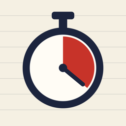

Stepback
The mock board you can run alone, at home, with your mannequin and your kit.
On exam day a proctor reads the instructions, starts a timer and tells you when to stop. An examiner ticks a sheet. Nobody talks to you. Stepback puts that room in your iPhone so the real one is not the first time you hear it.
What it does
- Reads every section aloud in English, the way the practical is given, and calls the minutes that remain.
- Keeps the time of each section and tells you to stop working.
- Hands you the examiner's sheet afterwards: tick what you did, see what costs you points.
- Shows Spanish under each instruction and task. Con el español debajo de cada instrucción y tarea.
- Lists the kit to pack and the rules that fail people who know the service.
Exams inside
- Cosmetology practical, 10 core sections
- Esthetics practical, 6 core sections
- Nail technology practical, 7 core sections
Each follows the national practical format that many state boards use. States add, drop or retime sections, so your own candidate bulletin always wins; with Pro you can set your state's time for any section.
Free and Pro
Every section is free to rehearse with its timer, its instructions in English and its score sheet, and so is the kit list. The first two sections of each exam also come with the proctor's voice and Spanish. Stepback Pro adds the voice and Spanish everywhere, the full mock board from the first section to the last, your score history with the tasks you miss most, and your own state's times.
Support
Questions, a section your state does differently, a translation that reads wrong: write to baltajmn@gmail.com.